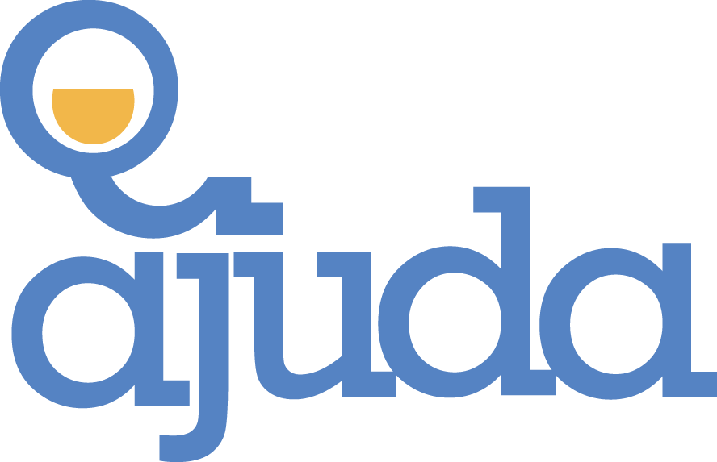

<nav class="navbar bg-body-tertiary">
    <div class="container">
        <a
            class="navbar-brand"
            routerLink="/"
        >
            
        </a>
        <div
            class="d-flex"
            role="search"
        >
            <input
                class="form-control me-2"
                type="search"
                placeholder="Procure por uma ação"
                aria-label="Search"
                [(ngModel)]="termoBusca"
            />
            <!-- Botão buscar levando pra rota do buscar temporariamente -->
            <button
                class="btn btn-outline-success"
                type="submit"
                (click)="buscarAcoes()"
            >
                procurar
            </button>
        </div>
        <button
            type="button"
            class="btn btn-primary btn-lg"
        >
            Quem Somos
        </button>
        <button
            routerLink="/criaracao"
            type="button"
            class="btn btn-primary btn-lg"
        >
            Criar Ação
        </button>
        <div class="right-menu">
            <a href="#">Cadastro</a>
            <br />
            <a href="#">Login</a>
        </div>
    </div>
</nav>
